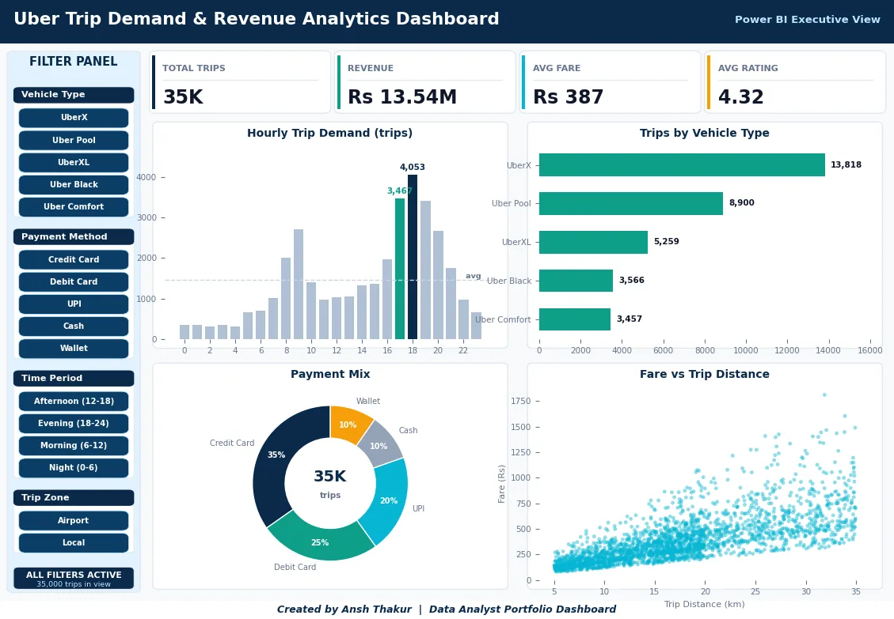

★ Flagship Project
Forecast Guard: AI-Powered Ride Demand Forecasting & Operations
High-precision urban mobility demand forecaster analyzing 35,000+ ride transactions. Replaces static gut-feel driver allocation with a 14-day SARIMA statistical engine, surge-pricing simulator, and confidence-band gated LLM operations copilot.
- Demand Concentration: Isolated that the evening rush (5–7 PM) captures 31.2% of daily demand, and airport trips drive 54.8% of total revenue from only 39.6% of trips.
- Statistical Forecaster: Developed a 14-day SARIMA demand forecast reaching 8.3% MAPE (~20% improvement over baseline linear models).
- Dynamic Surge Simulator: Modeled demand-elastic price multipliers projected to deliver +53% gross-margin uplift at peak periods, deployed as an operational FastAPI microservice.
- Gated GenAI Copilot: Deployed on Hugging Face Spaces where the SARIMA 95% confidence interval acts as a gate—Groq LLM automatically generates executive action briefs strictly on confirmed statistical anomalies.

8.3%
SARIMA Forecast MAPE
+53%
Projected Margin Surge
35,000+
Ride Records Analyzed
95% CI
Anomaly Gate Threshold